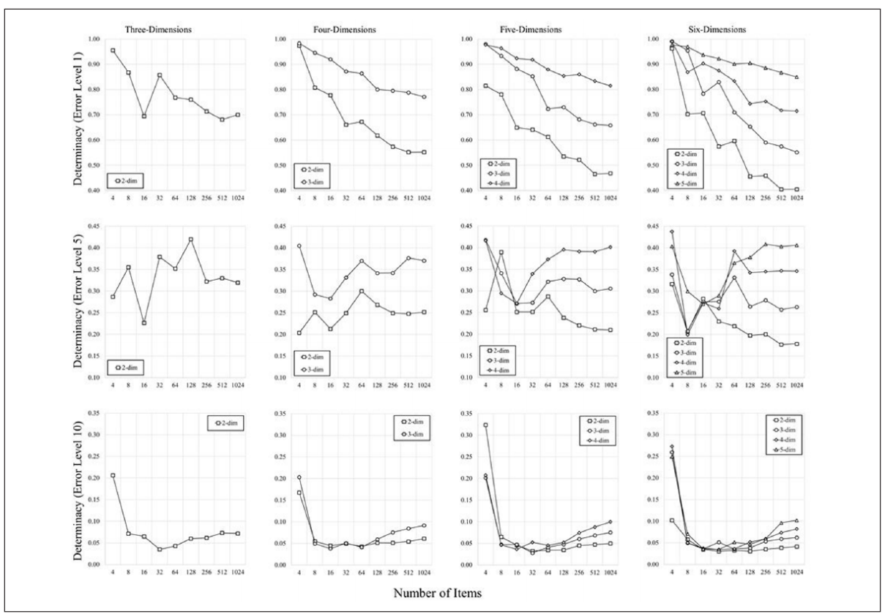
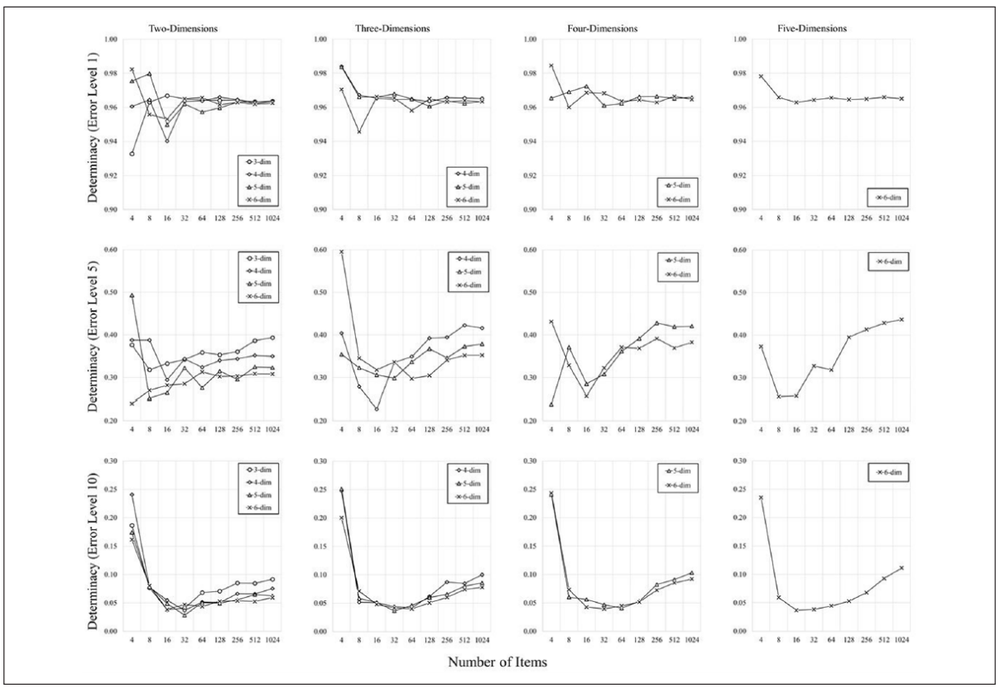
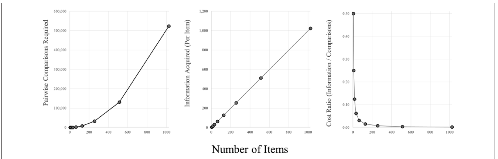
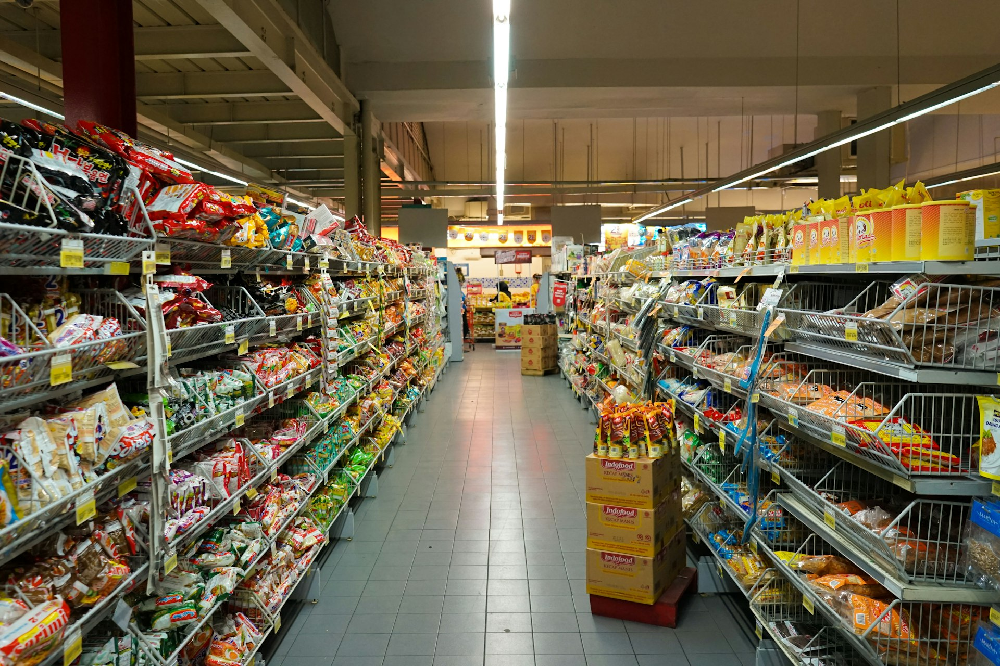

Simulación de la fidelidad de los datos con conjuntos grandes de estímulos y estimación variable de la dimensionalidad en el escalamiento multidimensional
ADMINISTRACIÓN DE NEGOCIOS · CUARTO SEMESTRE Sara Betancourth Álvarez · María Caballero Mestre · Mariana Cano Zuluaga · Miguel Escudero Pulgarín · Mateo Franco Cermeño · Camilo Hernández Zapata · María Marín Salazar · Sofia Muñoz Castillo · Emmanuel Ortiz Serna · Sofia Peláez Perez
01 — Contexto de la investigación
Comparar todo con todo
El escalamiento multidimensional (MDS) muestra en un mapa qué tan similares o distintos son unos estímulos de otros.
Se ha usado con conjuntos pequeños: 10 a 30 ítems. Cada ítem nuevo se compara con todos los anteriores, así que las comparaciones crecen mucho más rápido que los ítems.
30 ítems
435
60 ítems
1.770
comparaciones (dato del paper)
Ítems
10
Comparaciones
45
01 — Contexto de la investigación
¿Y con cientos?
Antes
10 a 30 ítems. Pocas comparaciones, conjuntos manejables.
→
Ahora
Recolección más rápida y más capacidad computacional: ya se puede trabajar con conjuntos grandes.
→
La duda
¿El MDS sigue representando correctamente las relaciones con cientos o más de mil ítems, o el análisis se vuelve impreciso y refleja error en los datos?
Segundo problema · la dimensionalidad
¿Cuántas dimensiones necesita el mapa? No es sencillo decidirlo, y no está claro qué pasa si se usan menos o más de las necesarias.
Por eso estudian 3 factores
Nº de ítemsRuido en los datosDimensionalidad
Con simulaciones de hasta 1.024 ítems, comparadas con espacios donde ya conocían la organización verdadera.
02 — Objetivo del estudio
Más comparaciones, ¿mejor resultado?
Saber si el MDS sigue siendo confiable o fiel con conjuntos grandes, hasta 1.024 ítems y no solo 10 o 30, y cómo influyen el error de los datos y cuántas dimensiones elige el analista.
Cómo: simulación Monte Carlo
1
Generar datos artificiales
→
2
Agregar errores, como si fueran participantes
→
3
Medir qué tanto el MDS recupera la estructura original
→
4
Repetir miles de veces
02 — Objetivo del estudio
Más allá de Young (1970)
LIMITACIÓNYOUNG (1970)HOUT ET AL. (2018)
Ítems301.024
Repeticiones por condición5500
Dimensionalidadasumida bien elegidatambién mal estimada
No escogieron una sola configuración favorable: combinaron todas las categorías e hicieron un análisis completo.
03 — Justificación · ¿por qué esta técnica multivariada?
Cerca = parecido
El MDS toma proximidades, qué tan parecido o diferente es cada par de ítems, y produce un mapa espacial. La distancia entre dos puntos es su similitud. El analista decide cuántas dimensiones tiene el mapa.
Relacional y multivariadoUn ítem no se define por un valor, sino por cómo se relaciona con todos los demás.
El MDS no se usó para estudiar los estímulos: los estímulos sirvieron para estudiar al MDS.
En psicología: 10 a 30 estímulos (imágenes, palabras o rostros) que una persona juzga por su parecido
03 — Justificación · ¿qué permitió descubrir?
La paradoja del MDS
Análisis simple · promedio o correlación directa
Más objetos para evaluar = respuestas más imprecisas. El stress sube con más datos: con 100 objetos era altísimo y parecía que el mapa "estaba mal construido".
"No usemos muchos objetos: la gente se equivoca más y los datos son cada vez peores"
→
Con el MDS
No evalúa cada dato aislado: la posición de un punto depende de sus relaciones con todos los demás. El stress sube por la suma de pequeñas imprecisiones, pero la ubicación se vuelve más precisa.
1.023comparaciones respaldan cada ítem en un conjunto de 1.024 · n − 1
03 — Justificación de la técnica
Métrico y por simulación
MDS métrico (el que usaron) vs. no métrico
PARMÉTRICO · 0–100NO MÉTRICO · ORDEN
A – B201.º
B – C602.º
A – C753.º
El métrico usa distancias reales; el no métrico, solo el orden de mayor a menor. (valores de ejemplo)
Por qué Monte Carlo
Con datos reales no se conoce el mapa verdadero.
1 · Crear
un espacio verdadero conocido
2 · Ensuciar
sumarle ruido aleatorio: nadie califica perfecto
3 · Correr
el MDS sobre los datos con ruido
4 · Comparar
el mapa obtenido contra el verdadero
Variando ruido, ítems y dimensionalidad · 500 repeticiones por condición
04 — Datos utilizados
Participantes que no existen
Datos simulados en MATLAB, no personas reales. Con datos reales nunca se sabe cuál es la respuesta correcta; al crearlos, se puede comprobar si el MDS la recupera.
Paso 1
Ítems ubicados al azar en un espacio "verdadero" de 2 a 6 dimensiones
Paso 2
10 participantes simulados, cada uno con su propio error
Paso 3
Distancia entre todos los pares de ítems, para cada participante
Paso 4
Promedio de los 10: con eso se corre el MDS
04 — Datos utilizados
Qué se varió, qué se midió
Variables
Cantidad de ítems · 4 a 1.024
Nivel de error en los datos
Dimensiones del espacio verdadero · 2 a 6
Dimensiones que usa el MDS · correctas, menos o más
Unidad de análisis
Los ítems, como puntos del mapa. Se comparan las distancias entre pares.
Determinación: qué tanto se parece el mapa del MDS al espacio verdadero. Correspondencia: los datos antes del MDS frente al verdadero.
500 repeticiones por combinación · total de experimentos0
EXP. 1 · 67.500
EXP. 2 · 135.000
EXP. 3 · 135.000
05 — Resultados principales
Un escenario muy adverso
Dispersión real vs. ruido agregado (desviación estándar, a escala)
Datos reales
≈ 2,89
Ruido 1
1
Ruido 5
5
Ruido 10
10 · más de 3 veces la dispersión real
Coordenadas verdaderas uniformes entre −5 y 5 · ruido normal por participante · distancias euclidianas promediadas entre 10, lo que reduce parte del ruido · MDS métrico con mdscale de MATLAB.
Stress · no se reporta
Es el desajuste del mapa. Ya se sabe que sube con más ítems y más ruido, así que no dice si el mapa es fiel.
Indicador central · determinación
R² (correlación de Pearson al cuadrado) entre las distancias del MDS y las verdaderas. Se lee como en la regresión: % de varianza explicada.
Control: correspondencia, los datos crudos promediados frente a los verdaderos.
Figura 1 · Determinación vs. nº de ítems · error 1, 5 y 10 · cada eje Y tiene su propia escala · clic para ampliar
Ruido 1
Muy alta y estable
≈ 0,96–0,97
Ruido 5
Curva en U: baja hasta ~16 ítems, luego sube
≈ 0,48 con 1.024
Ruido 10
La misma U, más abajo
≈ 0,12 con 1.024
Con 4 u 8 ítems los valores son poco estables: salen de solo 6 y 28 pares.
05 — Resultados · Experimento 1
La mejora la pone el MDS
↑
Determinación
mapa del MDS vs. verdadero: sube con más ítems, pasados ~16
↓
Correspondencia
datos crudos vs. verdadero: empeora con más ítems, y más con ruido alto
Si los datos crudos empeoran y el mapa mejora, la mejora no viene de los datos: viene de aplicar el MDS.
Vigas y juntas
Cada ítem se ubica con n − 1 comparaciones. Con más juntas, una dañada pesa menos: el error de un par mueve menos la ubicación final.
05 — Resultados · Experimentos 2 y 3 · dimensiones mal estimadas
Mejor pasarse que quedarse corto
Recomendación de los autores
Equivocarse por exceso, no por defecto.
El ruido reduce la determinación en los 3 experimentos.
Exp. 2 · subestimar (menos dimensiones)
Determinación más baja que en el Exp. 1. Con ruido bajo, agregar ítems siempre perjudica; con ruido medio y alto, curva en U y desde ~16 se estabiliza o sube un poco.

Figura 3 · Exp. 2 · clic para ampliar
Exp. 3 · sobreestimar (más dimensiones)
Casi no hay daño. Con ruido bajo la determinación queda plana; con ruido alto sube de forma constante después de 16 ítems.

Figura 4 · Exp. 3 · clic para ampliar
05 — Resultados · lectura para un gerente
Ajuste ≠ fidelidad
✗ Error 1
"El stress sube con más ítems: el mapa empeora"
Confunde ajuste con fidelidad.
✗ Error 2
"Entonces más ítems siempre es mejor"
Con ruido alto la determinación sigue ≈ 0,12, y la razón información/costo cae hasta ~100 ítems.

Figura 5 · comparaciones necesarias · información por ítem · razón información / comparaciones · clic para ampliar
Izquierda
Las comparaciones se disparan
Centro
La información por ítem crece en línea recta
Derecha
Lo que se gana por comparación cae hasta ~100 ítems
05 — Resultados · lo que encontramos
Una inconsistencia
El texto del paper
Define la determinación frente a las distancias verdaderas
R²( MDS , verdaderas )
≠
El código del Apéndice
La calcula contra las distancias simuladas promedio
R²( MDS , simuladas promedio )
Qué mediríaQué tan fiel es el mapa al espacio real que se creó
Qué mediríaQué tan bien el MDS reproduce los datos que recibió, ya con ruido
06 — Conclusiones · qué encontraron
El MDS sí funciona con muchos ítems
Si las dimensiones se eligen bien o de más: con poco ruido el mapa se mantiene fiel, y con más ruidomejora al agregar ítems, a partir de unos 16.
Lo que los resultados respaldan
1
El ruido en los datos es lo que más daña el mapa. La complejidad del espacio casi no influye.
2
La mejora no viene de mejores datos, sino del MDS: ubica cada ítem con su relación con todos, y un error aislado pesa menos.
3
Usar menos dimensiones de las necesarias es mucho más perjudicial que usar de más.
06 — Conclusiones · cautela y limitaciones
Lo que no se puede afirmar
Cautela · "más ítems siempre es mejor"
Con mucho ruido, incluso con 1.024 ítems, el mapa explica solo cerca del
12 %
de la realidad
Cautela · por qué funciona
La "ley de los grandes números" es una intuición de los autores: no la comprobaron.
Limitaciones
1
Todo fue simulado, con un error mucho más ordenado que el de personas reales, que se cansan o tienen sesgos. PRINCIPAL
2
Solo probaron el MDS métrico: no se sabe si se cumple con el no métrico.
3
Reconocen que más ítems = más comparaciones, tiempo y costo, pero no estudiaron cómo equilibrarlo con la mejora del mapa.

07 — Aplicación empresarial
300 productos, ¿cómo los ven?
Una cadena de retail colombiana, un supermercado o una tienda de moda, con 300 productos de marca propia.
¿Cómo perciben los clientes estos productos frente a la competencia, y dónde hay espacios que nadie está atendiendo?
Productos
300
Pares a comparar · 300 × 299 / 2
44.850
07 — Aplicación empresarial
De la encuesta al mapa
1
Encuestas y comparaciones entre productos y marcas
2
Una matriz de similitudes: qué tan parecido es cada par
3
El MDS la convierte en un mapa perceptual: cerca = parecidos para el cliente
4
Se lee el mapa: canibalización, competidores cercanos y zonas vacías
EJEMPLO ILUSTRATIVO · no son datos reales
07 — Aplicación empresarial
Qué cuidar, qué decidir
Lo que aporta el paper
Más productos pueden mejorar el mapa, siempre que:
Se estime bien la dimensionalidad: subestimarla perjudica
Se cuide la calidad de los datos: respuestas inconsistentes, errores de medición y ruido
El costo
Más productos = más comparaciones y más tiempo de recolección.
Hay que equilibrar:
amplitudcalidadrecursos
Decisiones
Ajustar el marketing · reposicionar la marca · modificar productos · organizar el surtido · desarrollar productos nuevos · alimentar sistemas de recomendación
Y medir el impacto
ventasretenciónsatisfaccióndesempeño
Referencias
Hout, M. C., Cunningham, C. A., Robbins, A., & MacDonald, J. (2018). Simulating the fidelity of data for large stimulus set sizes and variable dimension estimation in multidimensional scaling. SAGE Open, 8(2). https://doi.org/10.1177/2158244018773143
Young, F. W. (1970). Nonmetric multidimensional scaling: Recovery of metric information. Psychometrika, 35(4), 455–473. https://doi.org/10.1007/BF02291820
Figuras 1, 3, 4 y 5: Hout et al. (2018) · Foto del supermercado: F. Rasyid (Unsplash) · Mapas y diagramas: elaboración propia
← → navegar · F pantalla completa · N notas · clic en una figura para ampliarla